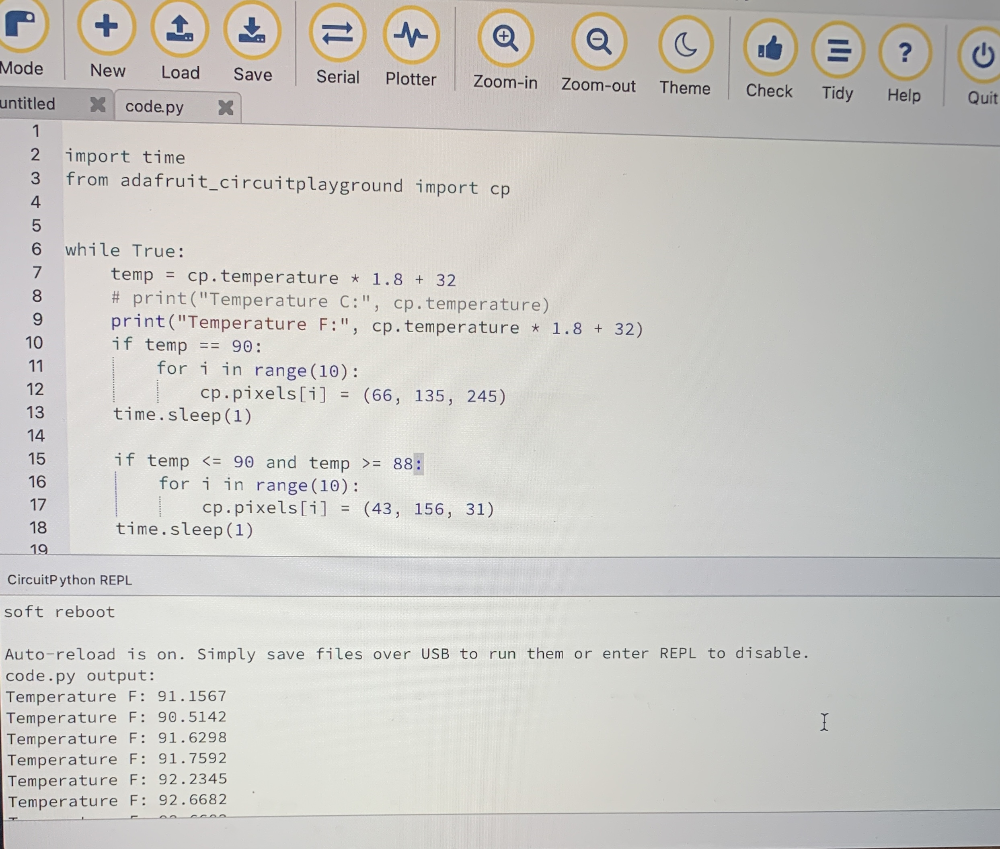

For Project 3 I used a circuit board to create a bracelet that can detect your mood, like a mood ring. I coded the circuit board so that it would detect the temperature in degrees Fahrenheit and change color based on what temperature it was. When making my mood-reading circuit board, I realized that because the circuit board is metal, it would make the temper hotter than normal body temperatures. To combat this, I altered the temperatures for the different moods. The circuit board flashes blue if the wearer is relaxed, blue/green when emotions are slightly charged, dark green is an average reading with no stress, and yellow is nervous or unsettled. Additionally, the board will flash purple when in a happy or passionate mood. I made my circuit board so it could be worn on the wrist, like a bracelet, or around your neck, like a necklace. This circuit board is a new take on mood rings and even enhances them because the exact temperature of the circuit board appears in Mu Editor when the circuit board is worn.
